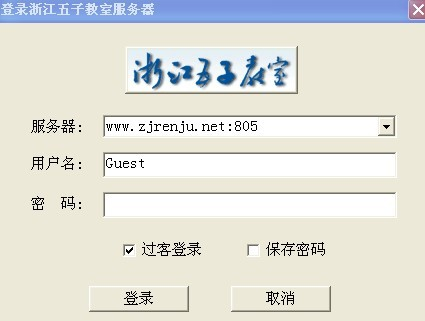

浙江五子棋教室客户端2.2版
#1 <font color="red">浙江五子棋教室客户端2.2版</font> 作者：有志青年 发表时间：2007-12-1 9:54:19
浙江五子棋教室客户端2.2版最新发布，新版本修改了部分BUG，连接速度更快，最重要的是完成了离线录象的制作功能，将方便更多的爱好者使用。浙江教室客户端2.2版本
修改了部分BUG,连接速度更快,最重要的是完成了离线录象的制作功能,将方便更多的爱好者使用。
浙江五子棋教室由浙江五子棋俱乐部开发和设计。
教室设计：诸杰
主页界面设计：郑剑锋
禁手识别：吕文哲
资料收集：徐永伟，黄荣华，潘仲良
官方网站下载地址为：http://www.zjrenju.net/Soft_Show.asp?SoftID=254
爱五子棋网下载地址： 2007112919250344792.rar
2007112919250344792.rar
浙江五子棋教室由浙江五子棋俱乐部开发和设计。教室设计：诸杰。主页界面设计：郑剑锋。禁手识别：吕文哲。资料收集：徐永伟，黄荣华，潘仲良。
浙江五子棋俱乐部的教室的教师来自全国各地。目前已经有超过20位有比赛和教学经验的棋友担任教室的工作。会对每一个开局实现专人负责的教学储备。同时进行实战和心理的课程分析。他们分别是：朱建锋（上海），刘彤（北京），吴镝（辽宁），李睿凡（北京），陈霖（浙江），黄圣明（四川），夏云鹤（四川），陈新（湖南），许斌（上海），潘仲良（上海），徐永伟（浙江），王荣生（浙江），陈卫忠（浙江）等。
浙江五子棋教室对外开放了一年多，最近由于其一年的托管期限已满，浙江教室面临两难的局面。浙江弈缘五子棋俱乐部尚处筹建、起步阶段，每年上万元的电信托管费用和更多的现实比赛费用支出，给俱乐部造成了一定的压力。
目前浙江弈缘五子棋俱乐部正在积极筹措，期待着教室早日恢复运营。
注：该软件使用完全免费。
［此帖子已被 失落刀 在 2010-2-19 15:40:44 编辑过］
#2 Re:浙江五子棋教室客户端2.2版 作者：26 发表时间：2008-5-29 15:07:40
支持，优秀的五子棋教学研究录像软件，非常人性化。如果研讨室6-10可以由第一个进入者设置密码就更完美了。
#3 Re:浙江五子棋教室客户端2.2版 作者：神秘幽灵 发表时间：2009-11-13 0:02:50
谢谢了，还没用了
#4 Re:浙江五子棋教室客户端2.2版 作者：小帮帮 发表时间：2010-1-29 20:02:52
哪里有可以读的课程回放的资料，看一下这款软件
#5 Re:浙江五子棋教室客户端2.2版 作者：失落刀 发表时间：2010-2-19 15:29:43

下载并解压后可以在界面上点击“登陆教室”，然后按本楼图设置服务器：www.zjrenju.net:805
就可以登录了。
如果要使用教室更多功能，可以选择点击“学员注册”按钮后免费注册ID，然后使用ID登录。
［此帖子已被 失落刀 在 2010-2-20 9:51:29 编辑过］
［此帖子已被 失落刀 在 2010-2-20 23:42:57 编辑过］
#6 Re:浙江五子棋教室客户端2.2版 作者：怪 发表时间：2010-2-19 17:38:51
 还是money的问题
还是money的问题
#7 Re:浙江五子棋教室客户端2.2版 作者：水月 发表时间：2010-2-20 17:51:57
问一下，打算开源么？#8 Re:浙江五子棋教室客户端2.2版 作者：一剑寒霜 发表时间：2010-2-23 17:39:54
现在教室还讲课吗